Chapter 1: Numbers
Section 1.9: Integer Operations
Learning Objective(s)
- Add two or more integers with the same sign.
- Add two or more integers with different signs.
Introduction
On an extremely cold day, the temperature may be \(-10\). If the temperature rises 8 degrees, how will you find the new temperature? Knowing how to add integers is important here and in much of algebra.
Adding Integers with the Same Signs
Since positive integers are the same as natural numbers, adding two positive integers is the same as adding two natural numbers.
To add integers on the number line, you move forward, and you face right (the positive direction) when you add a positive number.
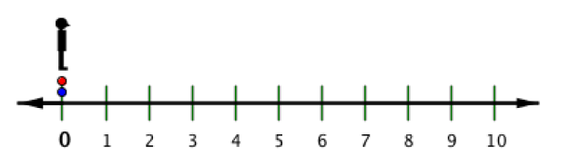
As with positive numbers, to add negative integers on the number line, you move forward, but you face left (the negative direction) when you add a negative number.
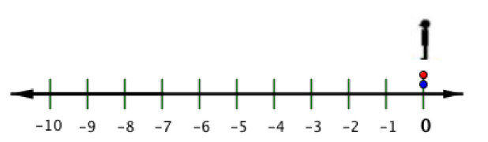
In both cases, the total number of units moved is the total distance moved. Since the distance of a number from 0 is the absolute value of that number, then the absolute value of the sum of the integers is the sum of the absolute values of the addends.
When both numbers are negative, you move left in a negative direction, and the sum is negative. When both numbers are positive, you move right in a positive direction, and the sum is positive.
To add two numbers with the same sign (both positive or both negative):
- Add their absolute values and give the sum the same sign.
Example 1
Find \(-23 + (-16)\).
Solution
Both addends have the same sign (negative).
So, add their absolute values: \(|-23| = 23\) and \(|-16| = 16\).
The sum of those numbers is \(23 + 16 = 39\).
Since both addends are negative, the sum is negative.
Answer: \(-23 + (-16) = -39\)
With more than two addends that have the same sign, use the same process with all addends.
Example 2
Find \(-27 + (-138) + (-55)\).
Solution
All addends have the same sign (negative).
So, add their absolute values: \(|-27| = 27\), \(|-138| = 138\), and \(|-55| = 55\).
The sum of those numbers is \(27 + 138 + 55 = 220\).
Since all addends are negative, the sum is negative.
Answer: \(-27 + (-138) + (-55) = -220\)
Self Check A
Find \(-32 + (-14)\).
\(-46\)
The sum is found by first adding the absolute values of the addends: \(|-32| + |-14| = 32 + 14 = 46\). Then you must give the sum the same sign as the two addends, so the answer is \(-46\).
Adding Integers with Different Signs
Consider what happens when the addends have different signs, like in the temperature problem in the introduction. If it's \(-10\) degrees, and then the temperature rises 8 degrees, the new temperature is \(-10 + 8\). How can you calculate the new temperature?
Using the number line below, you move forward to add, just as before. Face and move in a positive direction (right) to add a positive number, and move forward in a negative direction (left) to add a negative number.
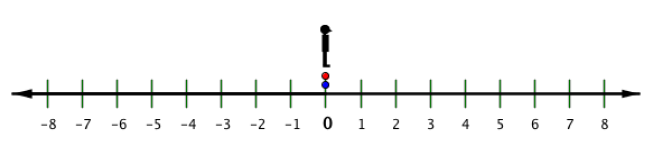
See if you can find a rule for adding numbers without using the number line. Notice that when you add a positive integer and a negative integer, you move forward in the positive (right) direction to the first number, and then move forward in the negative (left) direction to add the negative integer.
Since the distances overlap, the absolute value of the sum is the difference of their distances. So to add a positive number and a negative number, you subtract their absolute values (their distances from 0.)
What is the sign of the sum? It's pretty easy to figure out. If you moved further to the right than you did to the left, you ended to the right of 0, and the answer is positive; and if you move further to the left, the answer is negative. Let's look at the illustration below and determine the sign of the sum.
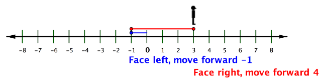
If you didn't have the number line to refer to, you can find the sum of \(-1 + 4\) by
- subtracting the distances from zero (the absolute values) \(4 - 1 = 3\) and then
- applying the sign of the one furthest from zero (the largest absolute value). In this case, 4 is further from 0 than \(-1\), so the answer is positive: \(-1 + 4 = 3\)
Look at the illustration below.
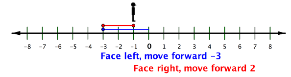
If you didn't have the number line to refer to, you can find the sum of \(-3 + 2\) by
- subtracting the distances from zero (the absolute values) \(3 - 2 = 1\) and then
- applying the sign of the one furthest from zero (the largest absolute value). In this case, \(|-3| > |2|\), so the answer is negative: \(-3 + 2 = -1\)
To add two numbers with different signs (one positive and one negative):
- Find the difference of their absolute values.
- Give the sum the same sign as the number with the greater absolute value.
Note that when you find the difference of the absolute values, you always subtract the lesser absolute value from the greater one. The example below shows you how to solve the temperature question that you considered earlier.
Example 3
Find \(8 + (-10)\).
Solution
The addends have different signs.
So find the difference of their absolute values.
\(|-10| = 10\) and \(|8| = 8\).
The difference of the absolute values is \(10 - 8 = 2\).
Since \(10 > 8\), the sum has the same sign as \(-10\).
Answer: \(8 + (-10) = -2\)
Example 4
Find \(-22 + 37\) when \(x = -22\).
Solution
\(|-22| = 22\) and \(|37| = 37\)
\(37 - 22 = 15\)
The addends have different signs. So find the difference of their absolute values.
Since \(|37| > |-22|\), the sum has the same sign as 37.
Answer: \(-22 + 37 = 15\)
With more than two addends, you can add the first two, then the next one, and so on.
Example 5
Find \(-27 + (-138) + 55\).
Solution
Add two at a time, starting with \(-27 + (-138)\).
\(|-27| = 27\) and \(|-138| = 138\)
\(27 + 138 = 165\)
\(-27 + (-138) = -165\)
Since they have the same signs, you add their absolute values and use the same sign.
Now add \(-165 + 55\). Since \(-165\) and \(55\) have different signs, you add them by subtracting their absolute values.
\(|-165| = 165\) and \(|55| = 55\)
\(165 - 55 = 110\)
\(-165 + 55 = -110\)
Since \(165 > 55\), the sign of the final sum is the same as the sign of \(-165\).
Answer: \(-27 + (-138) + 55 = -110\)
Self Check B
Find \(32 + (-14)\).
\(18\)
Since the addends have different signs, you must find the difference of the absolute values. \(|32| = 32\) and \(|-14| = 14\). The difference is \(32 - 14 = 18\). The sign of the sum is the same as the addend with the greater absolute value. Since \(|32| > |-14|\), the sum is positive.
There are two cases to consider when adding integers. When the signs are the same, you add the absolute values of the addends and use the same sign. When the signs are different, you find the difference of the absolute values and use the same sign as the addend with the greater absolute value.
Adding Real Numbers
The same rules apply when adding fractions and decimals with different signs.
Example 6
Find \(-\dfrac{3}{4} + \dfrac{7}{8}\).
Solution
The signs are different, so find the difference of their absolute values.
\(\left|-\dfrac{3}{4}\right| = \dfrac{3}{4}\) and \(\left|\dfrac{7}{8}\right| = \dfrac{7}{8}\)
First rewrite \(\dfrac{3}{4}\) as an improper fraction with a common denominator of 8, then substitute in the problem:
\[\frac{7}{8} - \frac{6}{8} = \frac{1}{8}\]Since \(\left|\dfrac{7}{8}\right| > \left|-\dfrac{3}{4}\right|\), the sum has the same sign as \(\dfrac{7}{8}\).
Answer: \(-\dfrac{3}{4} + \dfrac{7}{8} = \dfrac{1}{8}\)
Example 7
Find \(27.832 + (-3.06)\).
Solution
When you add decimals, remember to line up the decimal points so you are adding tenths to tenths, hundredths to hundredths, and so on.
Since the addends have different signs, subtract their absolute values.
\[ \begin{aligned} &27.832 \\ -\;&\phantom{2}3.060 \\ \hline &24.772 \end{aligned} \]\(|-3.06| = 3.06\)
The sum has the same sign as \(27.832\) whose absolute value is greater.
Answer: \(27.832 + (-3.06) = 24.772\)
Self Check C
Find \(-32.22 + 124.3\).
\(92.08\)
Since the addends have different signs, you must subtract their absolute values. \(124.3 - 32.22 = 92.08\). Since \(|124.3| > |-32.22|\), the sum is positive.
Example 8
Boston is, on average, 7 degrees warmer than Bangor, Maine. The low temperature on one cold winter day in Bangor was \(-13°\text{ F}\). About what low temperature would you expect Boston to have on that day?
Solution
The phrase "7 degrees warmer" means you add 7 degrees to Bangor's temperature to estimate Boston's temperature.
Boston's temperature is \(-13 + 7\)
On that day, Bangor's low was \(-13°\), so you add \(7°\) to \(-13°\)
\(-13 + 7 = -6\) Add the integers. Since one is positive and the other is negative, you find the difference of \(|-13|\) and \(|7|\), which is 6. Since \(|-13| > |7|\), the final sum is negative.
Answer: You would expect Boston to have a temperature of \(-6\) degrees.
Example 9
Two people are in a tug-of-war contest. They are facing each other, each holding the end of a rope. They both pull on the rope, trying to move the center toward themselves.
Here's an illustration of this situation. The person on the right is pulling in the positive direction, and the person on the left is pulling in the negative direction.
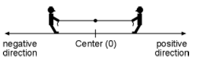
At one point in the competition, the person on the right was pulling with 122.8 pounds of force. The person on the left was pulling with 131.3 pounds of force. The forces on the center of the rope, then, were 122.8 lbs and \(-131.3\) lbs.
- What was the net (total sum) force on the center of the rope?
- In which direction was it moving?
Solution
Net force \(= 122.8 + (-131.3)\) The net force is the sum of the two forces on the rope.
Net force \(= -8.5\) To find the sum, add the difference of the absolute values of the addends. Since \(|-131.3| > 122.8\), the sum is negative.
Answer: The net force is \(-8.5\) lbs (or 8.5 lbs to the left). The center of the rope is moving to the left (the negative direction).
Notice that it makes sense that the rope was moving to the left, since that person was pulling with more force.
Self Check D
After Bangor reached a low temperature of \(-13°\), the temperature rose only 4 degrees higher for the rest of the day. What was the high temperature that day?
The temperature rose (added) 4 degrees from \(-13\), so the high temperature is \(-13 + 4\). Since the addends have different signs, you must find the difference of the absolute values. \(|-13| = 13\) and \(|4| = 4\). The difference is \(13 - 4 = 9\). The sign of the sum is the same as the addend with the greater absolute value. Since \(|-13| > |4|\), the sum is \(-9\).
As with integers, adding real numbers is done following two rules. When the signs are the same, you add the absolute values of the addends and use the same sign. When the signs are different, you subtract the absolute values and use the same sign as the addend with the greater absolute value.
Subtracting Real Numbers
Subtraction and addition are closely related. They are called inverse operations, because one "undoes" the other. So, just as with integers, you can rewrite subtraction as addition to subtract real numbers.
Suppose you have \(\$10\) and you loan a friend \(\$5\). An hour later, she pays you back the \(\$5\) she borrowed. You are back to having \(\$10\). You could represent the transaction like this: \(10 - 5 + 5 = 10\).
This works because a number minus itself is 0.
\[3 - 3 = 0 \qquad 63.5 - 63.5 = 0 \qquad 39{,}283 - 39{,}283 = 0\]So, adding a number and then subtracting the same number is like adding 0. Thinking about this idea in terms of opposite numbers, you can also say that a number plus its opposite is also 0. Notice that each example below consists of a positive and a negative number pair added together.
\[3 + (-3) = 0 \qquad -63.5 + 63.5 = 0 \qquad 39{,}283 + (-39{,}283) = 0\]Two numbers are additive inverses if their sum is 0. Since this means the numbers are opposites (same absolute value but different signs), "additive inverse" is another, more formal term for the opposite of a number. (Note that 0 is its own additive inverse.)
You can use the additive inverses or opposites to rewrite subtraction as addition. If you are adding two numbers with different signs, you find the difference between their absolute values and keep the sign of the number with the greater absolute value.
When the greater number is positive, it's easy to see the connection: \(13 + (-7) = 13 - 7\). Both equal 6.
Let's see how this works. When you add positive numbers, you are moving forward, facing in a positive direction.
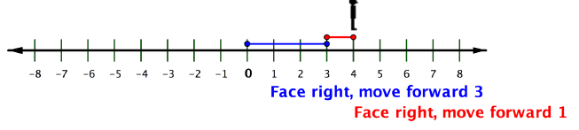
When you subtract positive numbers, you can imagine moving backward, but still facing in a positive direction.
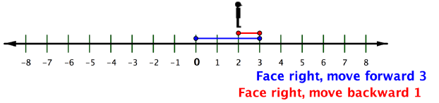
Now let's see what this means when one or more of the numbers is negative. Recall that when you add a negative number, you move forward, but face in a negative direction (to the left).
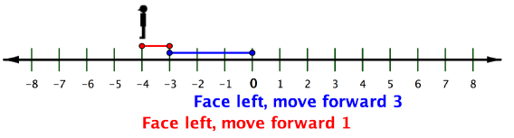
How do you subtract a negative number? First face and move forward in a negative direction to the first number, \(-2\). Then continue facing in a negative direction (to the left), but move backward to subtract \(-3\).
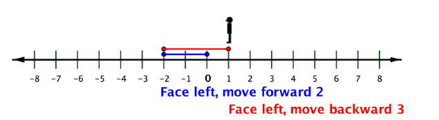
But isn't this the same result as if you had added positive 3 to \(-2\)? \(-2 + 3 = 1\).
In each addition problem, you face one direction and move some distance forward. In the paired subtraction problem, you face the opposite direction and then move the same distance backward. Each gives the same result!
To subtract a real number, you can rewrite the problem as adding the opposite (additive inverse).
Note, that while this always works, whole number subtraction is still the same. You can subtract \(38 - 23\) just as you have always done. Or, you could also rewrite it as \(38 + (-23)\). Both ways you will get the same answer.
\[38 - 23 = 38 + (-23) = 15\]It's your choice in these cases.
Another way to think about subtracting is to think about the distance between the two numbers on the number line. In the example above, 382 is to the right of 0 by 382 units, and \(-93\) is to the left of 0 by 93 units. The distance between them is the sum of their distances to 0: \(382 + 93\).
Example 10
Find \(23 - 73\).
Solution
You can't use your usual method of subtraction, because 73 is greater than 23.
\(23 + (-73)\) Rewrite the subtraction as adding the opposite.
\(|23| = 23\) and \(|-73| = 73\)
\(73 - 23 = 50\)
The addends have different signs, so find the difference of their absolute values.
Answer: \(23 - 73 = -50\) Since \(|-73| > |23|\), the final answer is negative.
Example 11
Find \(382 - (-93)\).
Solution
\(382 + 93\) Rewrite the subtraction as adding the opposite. The opposite of \(-93\) is 93. So, this becomes a simple addition problem.
\(382 + 93 = 475\)
Answer: \(382 - (-93) = 475\)
Another way to think about subtracting is to think about the distance between the two numbers on the number line. In the example above, 382 is to the right of 0 by 382 units, and −93 is to the left of 0 by 93 units. The distance between them is the sum of their distances to 0: 382 + 93.
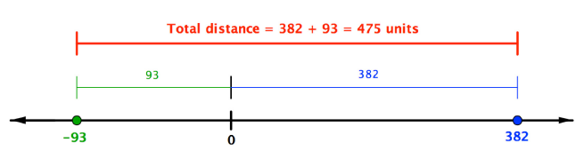
Example 12
Find \(22\dfrac{1}{3} - \left(-\dfrac{3}{5}\right)\).
Solution
Rewrite the subtraction as adding the opposite. The opposite of \(-\dfrac{3}{5}\) is \(\dfrac{3}{5}\).
\[22\frac{1}{3} + \frac{3}{5}\]This is now just adding two rational numbers. Remember to find a common denominator when adding fractions. 3 and 5 have a common multiple of 15; change denominators of both fractions to 15 (and make the necessary changes in the numerator!) before adding.
\[22\frac{1 \times 5}{3 \times 5} + \frac{3 \times 3}{5 \times 3} = 22\frac{5}{15} + \frac{9}{15} = 22\frac{14}{15}\]Answer: \(22\dfrac{1}{3} - \left(-\dfrac{3}{5}\right) = 22\dfrac{14}{15}\)
Self Check E
Find \(-32.3 - (-16.3)\).
To subtract, change the problem to adding the opposite of \(-16.3\), which gives \(-32.3 + 16.3\). Then use the rules for adding two numbers with different signs. Since the difference between 32.3 and 16.3 is 16, and \(|-32.3| > |16.3|\), the correct answer is \(-16\).
When you have more than two real numbers to add or subtract, work from left to right as you would when adding more than two whole numbers. Be sure to change subtraction to addition of the opposite when needed.
Example 13
Find \(-23 + 16 - (-32) - 4 + 6\).
Solution
Start with \(-23 + 16\). The addends have different signs, so find the difference and use the sign of the addend with the greater absolute value. \(-23 + 16 = -7\).
Now you have \(-7 - (-32)\). Rewrite this subtraction as addition of the opposite. The opposite of \(-32\) is 32, so this becomes \(-7 + 32\), which equals 25.
You now have \(25 - 4\). You could rewrite this as an addition problem, but you don't need to.
Complete the final addition of \(21 + 6\).
Answer: \(-23 + 16 - (-32) - 4 + 6 = 27\)
Self Check F
Find \(32 - (-14) - 2 + (-82)\).
To subtract \(32 - (-14)\), write the subtraction as addition of the opposite, giving \(32 + 14 = 46\). Then subtract 2 to get 44, and add \(-82\) to get \(-38\).
Example 14
Boston is, on average, 7 degrees warmer than Bangor, Maine. The low temperature on one cold winter day in Boston was \(3°\text{F}\). About what low temperature would you expect Bangor to have on that day?
Solution
The phrase "7 degrees warmer" means you can subtract 7 degrees from Boston's temperature to estimate Bangor's temperature. (Note that you can also add 7 degrees to Bangor's temperature to estimate Boston's temperature. Be careful about which should have the greater number!)
Bangor's temperature is \(3 - 7\) On that day, Boston's low was \(3°\), so you subtract \(7°\) from \(3°\).
\(3 - 7 = 3 + (-7)\) Since \(3 < 7\), rewrite the subtraction problem as addition of the opposite.
Add the numbers. Since one is positive and the other is negative, you find the difference of \(|-7|\) and \(|3|\), which is 4. Since \(|-7| > |3|\), the final sum is negative.
Answer: You would expect the low temperature in Bangor, Maine to be \(-4°\text{F}\).
Example 15
Everett paid several bills without balancing his checkbook first! When the last check he wrote was still to be deducted from his balance, Everett's account was already overdrawn. The balance was \(-\$201.35\). The final check was for \(\$72.66\), and another \(\$25\) will be subtracted as an overdraft charge. What will Everett's account balance be after that last check and the overdraft charge are deducted?
Solution
\(-201.35 - 72.66 - 25\) The new balance will be the existing balance of \(-\$201.35\), minus the check's amount and the overdraft charge.
\(-201.35 - 72.66 - 25\)
\(-201.35 + (-72.66) - 25\) Start with the first subtraction, \(-201.35 - 72.66\). Rewrite it as the addition of the opposite of 72.66.
\(-274.01 - 25\) Since the addends have the same signs, the sum is the sum of their absolute values (\(201.35 + 72.66\)) with the same sign (negative).
\(-274.01 + (-25)\)
\(-274.01 + (-25) = -299.01\) Again, rewrite the subtraction as the addition of the opposite. Add, by adding the sum of their absolute values and use the same sign as both addends.
Answer: Everett's account balance will be \(-\$299.01\).
Example 16
One winter, Phil flew from Syracuse, NY to Orlando, FL. The temperature in Syracuse was \(-20°\text{F}\). The temperature in Orlando was \(75°\text{F}\). What was the difference in temperatures between Syracuse and Orlando?
Solution
\(75 - (-20)\) To find the difference between the temperatures, you need to subtract. We subtract the ending temperature from the beginning temperature to get the change in temperature.
\(75 + 20\) Rewrite the subtraction as adding the opposite. The opposite of \(-20\) is 20.
\(75 + 20 = 95\)
There is a 95 degree difference between \(75°\) and \(-20°\).
Answer: The difference in temperatures is 95 degrees.
Self Check G
Louise noticed that her bank balance was \(-\$33.72\) before her paycheck was deposited. After the check had been deposited, the balance was \(\$822.98\). No other deductions or deposits were made. How much money was she paid?
\(\$856.70\). The amount she was paid is the difference between the two balances: \(822.98 - (-33.72)\). This is the same as \(822.98 + 33.72\), or \(856.70\).
Subtracting a number is the same as adding its opposite (also called its additive inverse). To subtract you can rewrite the subtraction as adding the opposite and then use the rules for the addition of real numbers.
Multiplying and Dividing Real Numbers
After addition and subtraction, the next operations you learned how to do were multiplication and division. You may recall that multiplication is a way of computing "repeated addition," and this is true for negative numbers as well.
Multiplication and division are inverse operations, just as addition and subtraction are. You may recall that when you divide fractions, you multiply by the reciprocal.
Multiplying real numbers is not that different from multiplying whole numbers and positive fractions. With whole numbers, you can think of multiplication as repeated addition. Using the number line, you can make multiple jumps of a given size. For example, the following picture shows the product \(3 \times 4\) as 3 jumps of 4 units each.
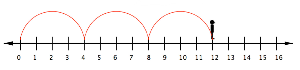
So to multiply \(3(-4)\), you can face left (toward the negative side) and make three "jumps" forward (in a negative direction).
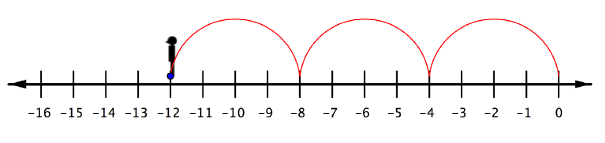
The product of a positive number and a negative number (or a negative and a positive) is negative. You can also see this by using patterns. In the following list of products, the first number is always 3. The second number decreases by 1 with each row (3, 2, 1, 0, \(-1\), \(-2\)). Look for a pattern in the products of these numbers. What numbers would fit the pattern for the last two products?
\[ \begin{aligned} 3(3) &= 9 \\ 3(2) &= 6 \\ 3(1) &= 3 \\ 3(0) &= 0 \\ 3(-1) &= \mathord{?} \\ 3(-2) &= \mathord{?} \end{aligned} \]Notice that the pattern is the same if the order of the factors is switched:
\[ \begin{aligned} 3(3) &= 9 \\ 2(3) &= 6 \\ 1(3) &= 3 \\ 0(3) &= 0 \\ -1(3) &= \mathord{?} \\ -2(3) &= \mathord{?} \end{aligned} \]Take a moment to think about that pattern before you read on.
As the factor decreases by 1, the product decreases by 3. So \(3(-1) = -3\) and \(3(-2) = -6\). If you continue the pattern further, you see that multiplying 3 by a negative integer gives a negative number. This is true in general.
To multiply a positive number and a negative number, multiply their absolute values. The product is negative.
You can use the pattern idea to see how to multiply two negative numbers. Think about how you would complete this list of products.
\[ \begin{aligned} -3(3) &= -9 \\ -3(2) &= -6 \\ -3(1) &= -3 \\ -3(0) &= 0 \\ -3(-1) &= \mathord{?} \\ -3(-2) &= \mathord{?} \end{aligned} \]As the factor decreases by 1, the product increases by 3. So \(-3(-1) = 3\), \(-3(-2) = 6\). Multiplying \(-3\) by a negative integer gives a positive number. This is true in general.
To multiply two positive numbers, multiply their absolute values. The product is positive. To multiply two negative numbers, multiply their absolute values. The product is positive.
Example 17
Find \(-3.8(0.6)\).
Solution
Multiply the absolute values as you normally would. Place the decimal point by counting place values. 3.8 has 1 place after the decimal point, and 0.6 has 1 place after the decimal point, so the product has \(1 + 1 = 2\) places after the decimal point.
\[3.8 \times 0.6 = 2.28\]Answer: \(-3.8(0.6) = -2.28\) The product of a negative and a positive is negative.
Example 18
Find \(\left(-\dfrac{3}{4}\right)\left(-\dfrac{2}{5}\right)\).
Solution
Multiply the absolute values of the numbers. First, multiply the numerators together to get the product's numerator. Then, multiply the denominators together to get the product's denominator. Rewrite in lowest terms, if needed.
\[\frac{3}{4} \times \frac{2}{5} = \frac{6}{20} = \frac{3}{10}\]Answer: \(\left(-\dfrac{3}{4}\right)\left(-\dfrac{2}{5}\right) = \dfrac{3}{10}\) The product of two negative numbers is positive.
To summarize:
- positive × positive: The product is positive.
- negative × negative: The product is positive.
- negative × positive: The product is negative.
- positive × negative: The product is negative.
You can see that the product of two negative numbers is a positive number. So, if you are multiplying more than two numbers, you can count the number of negative factors. If there are an even number (0, 2, 4, …) of negative factors to multiply, the product is positive. If there are an odd number (1, 3, 5, …) of negative factors, the product is negative.
Example 19
Find \(3(-6)(2)(-3)(-1)\).
Solution
Multiply the absolute values of the numbers.
\[3 \times 6 \times 2 \times 3 \times 1 = 108\]Count the number of negative factors. There are three: \((-6)\), \((-3)\), \((-1)\).
Answer: \(3(-6)(2)(-3)(-1) = -108\) Since there are an odd number of negative factors, the product is negative.
Self Check H
Find \((-30)(-0.5)\).
\(15\)
First, multiply 30 and 0.5. Multiply 30 and 5 to get 150, then place the decimal point. Since 0.5 has one digit to the right of the decimal point, the decimal point in the product needs to be placed with one digit to the right of it, to get 15. The two original factors are both negative. Since there is an even number of negative factors, the product is positive.
Dividing Real Numbers
When you divided by positive fractions, you learned to multiply by the reciprocal. You also do this to divide real numbers.
Two numbers are multiplicative inverses if their product is 1, the multiplicative identity. Reciprocal is another name for the multiplicative inverse (just as opposite is another name for additive inverse). An easy way to find the multiplicative inverse is to just "flip" the numerator and denominator.
Since division is rewritten as multiplication using the reciprocal of the divisor, and taking the reciprocal doesn't change any of the signs, division follows the same rules as multiplication.
When dividing, rewrite the problem as multiplication using the reciprocal of the divisor as the second factor. When one number is positive and the other is negative, the quotient is negative. When both numbers are negative, the quotient is positive. When both numbers are positive, the quotient is positive.
Example 20
Find \(28 \div \dfrac{4}{3}\).
Solution
Rewrite the division as multiplication by the reciprocal. The reciprocal of \(\dfrac{4}{3}\) is \(\dfrac{3}{4}\).
\[28 \div \frac{4}{3} = 28 \times \frac{3}{4} = \frac{28 \times 3}{4} = \frac{84}{4} = 21\]Answer: \(28 \div \dfrac{4}{3} = 21\)
Example 21
Find \(24 \div \left(-\dfrac{5}{6}\right)\).
Solution
Rewrite the division as multiplication by the reciprocal.
\[24 \times \left(-\frac{6}{5}\right) = -\frac{144}{5}\]Multiply. Since one number is positive and one is negative, the product is negative.
Answer: \(24 \div \left(-\dfrac{5}{6}\right) = -\dfrac{144}{5}\)
Example 22
Find \(\left(-\dfrac{4}{3}\right) \div (-6)\).
Solution
Rewrite the division as multiplication by the reciprocal.
\[\left(-\frac{4}{3}\right) \times \left(-\frac{1}{6}\right) = \frac{4}{18} = \frac{2}{9}\]Multiply. There is an even number of negative numbers, so the product is positive.
Answer: \(\left(-\dfrac{4}{3}\right) \div (-6) = \dfrac{2}{9}\)
Self Check I
What is the reciprocal, or multiplicative inverse, of \(-12\)?
Self Check J
Find \(\dfrac{6}{7} \div \dfrac{3}{10}\). Write the answer in lowest terms.
Example 23
Carl didn't know his bank account was at exactly 0 when he wrote a series of \(\$100\) checks. As each check went through, \(\$125\) was charged against his account. (In addition to the \(\$100\) for the check, there was a \(\$25\) overdraft charge.) After 1 check, his account was \(-\$125\) dollars. After 6 of these checks, what was his account balance?
Solution
Each check reduces the account by \(\$125\); this is represented by \(-\$125\). To find the amount it reduces for multiple checks, multiply the number of checks by the amount charged.
\[-\$125 \times 6 = -\$750\]Multiply. Since there is one negative number, the product is negative.
Answer: Carl's account balance is now \(-\$750\).
Self Check K
Over the course of an 18-year research project, the height of an oceanside cliff actually dropped due to soil erosion. At the end of this period, its height was measured as \(-3\) inches compared to what it had been at the beginning of the research project. What was the average amount that the cliff's height changed each year?
With multiplication and division, you can find the sign of the final answer by counting how many negative numbers are used in the product or quotient. If there are an even number of negatives, the result is positive. If there are an odd number of negatives, the result is negative. Division can be rewritten as multiplication, by using the reciprocal or multiplicative inverse of the divisor.
Summary
There are two cases to consider when adding integers. When the signs are the same, you add the absolute values of the addends and use the same sign. When the signs are different, you find the difference of the absolute values and use the same sign as the addend with the greater absolute value.
Subtracting a number is the same as adding its opposite (also called its additive inverse). To subtract you can rewrite the subtraction as adding the opposite and then use the rules for the addition of real numbers.
With multiplication and division, you can find the sign of the final answer by counting how many negative numbers are used in the product or quotient. If there are an even number of negatives, the result is positive. If there are an odd number of negatives, the result is negative. Division can be rewritten as multiplication, by using the reciprocal or multiplicative inverse of the divisor.
Exercises
Adding Integers — Same Sign
Adding Integers — Different Signs
Subtracting Real Numbers
Multiplying Real Numbers
Dividing Real Numbers
Mixed Practice
Exercises adapted from OpenStax Prealgebra, available free at cnx.org/content/col11756/1.9.